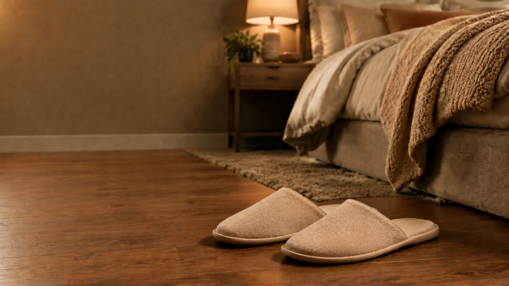
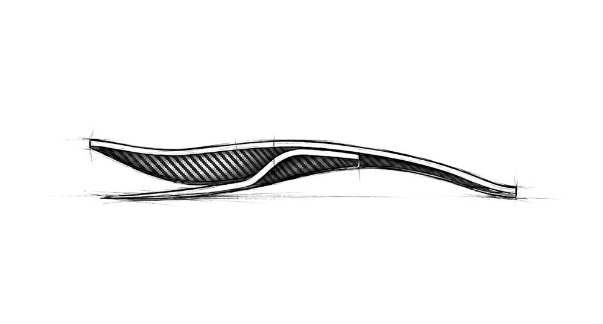
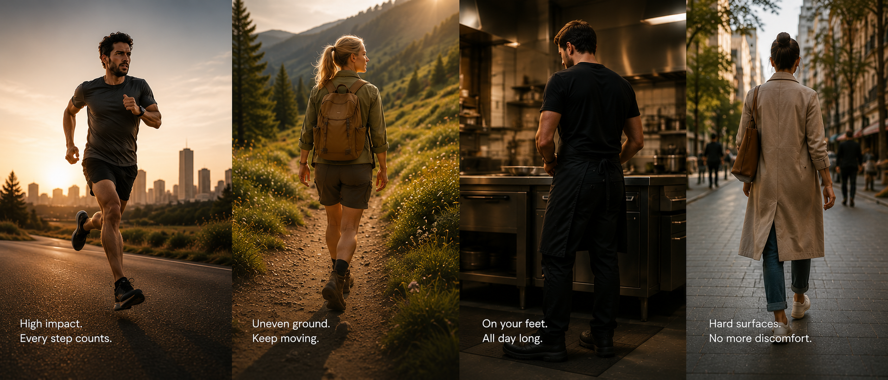

A different way to support every step. Engineered to return energy and reduce stress, so you can keep moving.
A patented mechanical architecture that works with your body, not against it.

Supports the arch and heel while keeping the forefoot free to move naturally.
Engineered to absorb impact and return energy with every step.
Carbon fiber design for maximum performance with minimal weight.
Available in multiple stiffness levels to match your weight and walking style.
It absorbs the impact your heel and arch would otherwise carry alone — so the ache that meets you each morning has less and less to hold onto.

While most insoles compress, crack, or lose their shape within months, CarboSteps is engineered from aerospace-grade carbon fiber — built to hold its shape and its function, step after step, year after year.